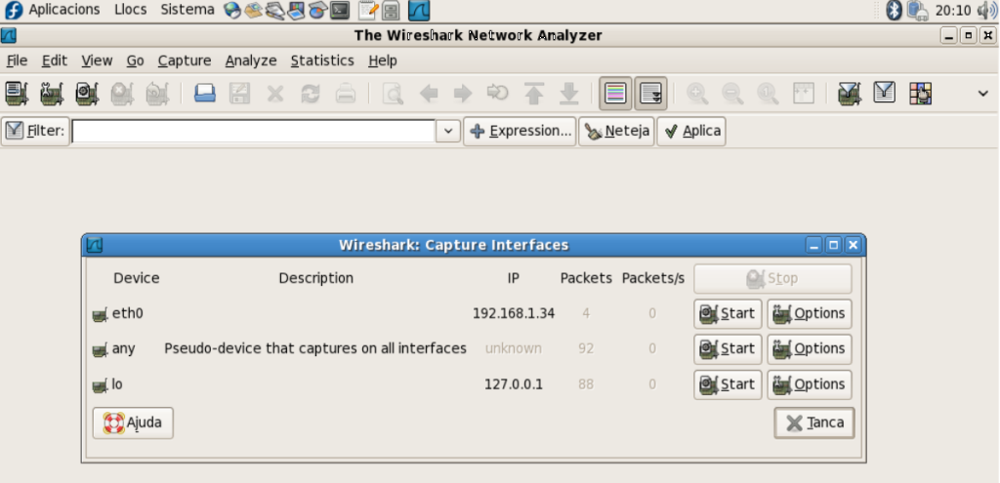
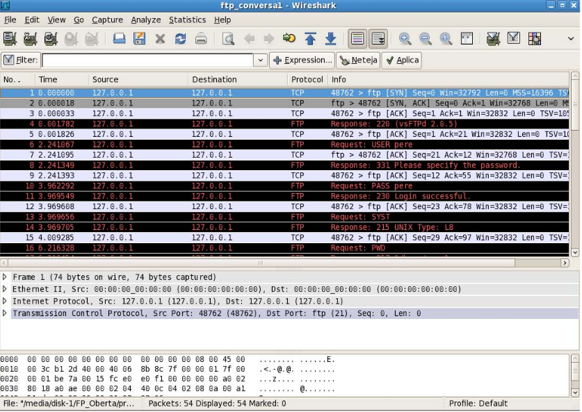
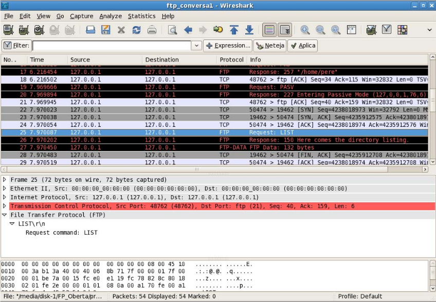
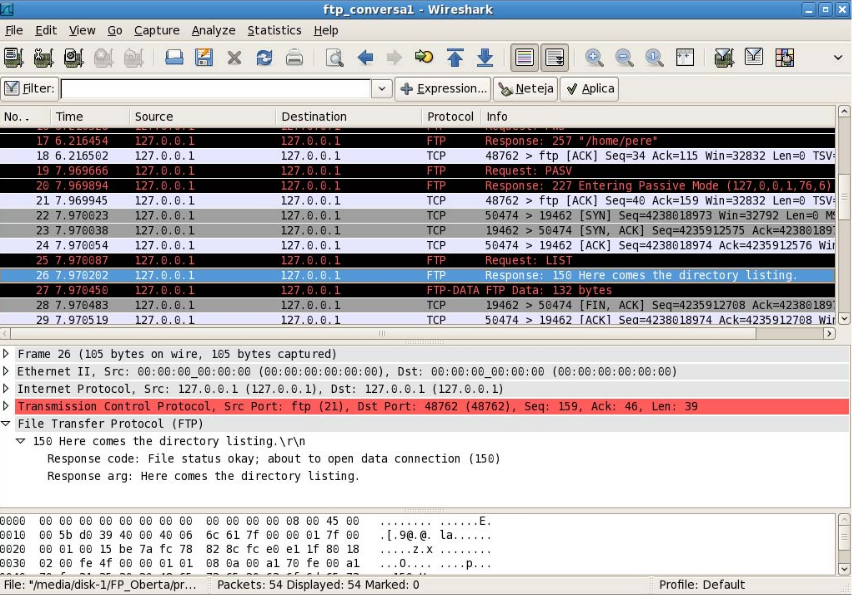
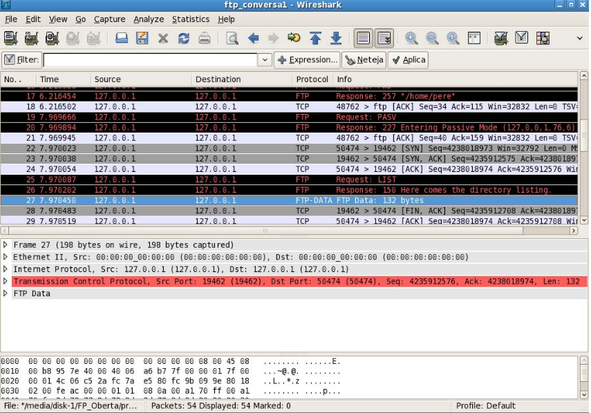
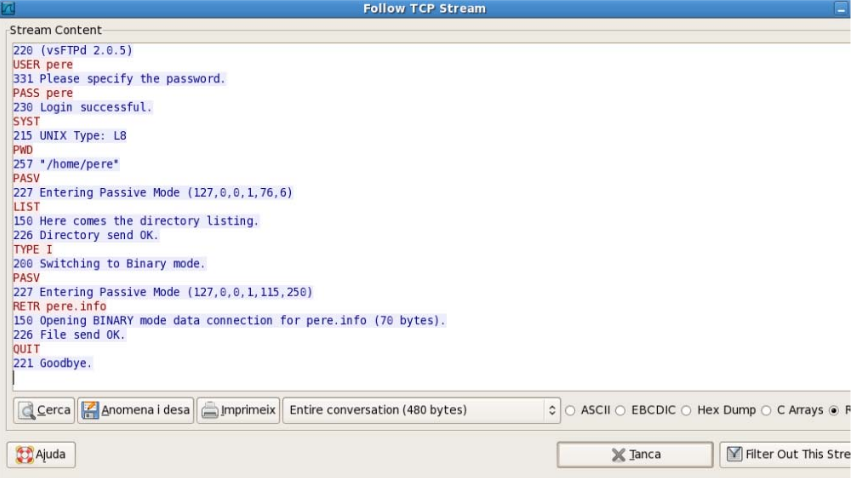
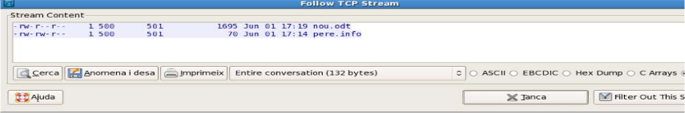
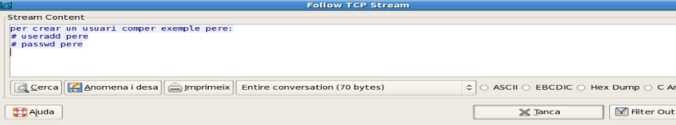

1. Instal·lació i components del servidor FTP
Val a dir que l’elecció d’aquest tipus de servidor radica en la seva facilitat d’instal·lació i configuració i el seu ús estès com a servidor anònim.
Per tant, atès que instal·lem el programari en el sistema operatiu Linux, podem procedir a instal·lar-lo mitjançant el terminal d’ordres. En aquest cas, per fer l’operació haurem de treballar mitjançant l’ordre sudo amb un usuari amb privilegis de sudo o, directament, essent root.
root@server:~# apt install vsftpd
S'està llegint la llista de paquets… Fet
S'està construint l'arbre de dependències
S'està llegint la informació de l'estat… Fet
S'instal·laran els paquets NOUS següents:
vsftpd
0 actualitzats, 1 nous a instal·lar, 0 a suprimir i 164 no actualitzats.
S'ha d'obtenir 153 kB d'arxius.
Després d'aquesta operació s'empraran 357 kB d'espai en disc addicional.
Bai:1 http://deb.debian.org/debian buster/main amd64 vsftpd amd64 3.0.3-12 [153 kB]
S'ha baixat 153 kB en 0s (335 kB/s)
S'estan preconfigurant els paquets...
S'està seleccionant el paquet vsftpd prèviament no seleccionat.
(S'està llegint la base de dades… hi ha 121463 fitxers i directoris instal·lats actualment.)
S'està preparant per a desempaquetar …/vsftpd_3.0.3-12_amd64.deb…
S'està desempaquetant vsftpd (3.0.3-12)…
S'està configurant vsftpd (3.0.3-12)…
L’execució d’aquesta ordre facilitarà la instal·lació del servidor i, a més, la creació d’un nou usuari anomenat ftp en el nostre sistema operatiu, que serà inclòs dins del grup nogroup.
El directori home de l’usuari és propietat de root i el grup propietari és nogroup. Val a dir que en aquest directori s’allotjaran els arxius que desitgem compartir mitjançant el servidor FTP per als usuaris anònims.
Arribats en aquest punt, és important destacar els diferents arxius de configuració presents dins del nostre sistema en el moment de la instal·lació del servidor vsftp:
/etc/init.d/vsftpd: arxiu per arrencar el servidor
FTP.
/etc/vsftpd.conf: arxiu de configuració del servidor vsftpd.
/etc/ftpusers: arxiu on es troba una llista dels usuaris que no es podran connectar al servidor (root, bin, nobody, etc.).
/srv/ftp: directori que conté els arxius que comparteixen el servidor.
/usr/sbin/vsftpd: arxiu executable del servei
FTP.
Després de la instal·lació del servidor, cal configurar el servidor. Per fer-ho, hem d’adreçar-nos a l’arxiu que conté la configuració, això és, /etc/vsftpd.conf.
root@server:~# head /etc/vsftpd.conf
# Example config file /etc/vsftpd.conf
#
# The default compiled in settings are fairly paranoid. This sample file
# loosens things up a bit, to make the ftp daemon more usable.
# Please see vsftpd.conf.5 for all compiled in defaults.
#
# READ THIS: This example file is NOT an exhaustive list of vsftpd options.
# Please read the vsftpd.conf.5 manual page to get a full idea of vsftpd's
# capabilities.
#
root@server:~#
L’estructura de les línies de l’arxiu /etc/vsftpd.conf segueix el següent patró:
directiva=valor
on directriu és el nom de la propietat que volem configurar i valor serà el valor que voldrem assignar a aquesta directriu. En aquest cas, si volem habilitar una directriu haurem de treure el caràcter de comentari (#).
Cal destacar que, entre les diferents opcions presents dins de l’arxiu /etc/vsftpd.conf, hi ha algunes que són booleanes, unes altres són numèriques i la resta són igual a cadenes de caràcters.
Cal destacar que algunes de les directrius que hi apareixen són força rellevants com, per exemple, servidor standalone. De fet, el servidor pot executar-se com un procés independent (standalone). Ara bé, per aconseguir-ho, la directriu listen=YES haurà d’estar activada (sense el caràcter de comentari).
Des del punt de vista de la gestió dels usuaris és important destacar que, per defecte, els usuaris que poden utilitzar el servidor són els anònims i tots aquells que disposin d’un compte en el sistema. En aquest cas, per activar-ne les funcions haurem d’activar les línies anonymous_enable=YES i local_enable=YES.
Respecte de la descàrrega d’arxius, quan un usuari anònim (anomymous) es connecta al servidor FTP accedirà al directori home de l’usuari anonymous (/srv/ftp, per defecte). Val a dir que aquest usuari es trobarà en una mena de gàbia o entorn d’engabiament, això és, el seu directori arrel (directori /).
Els usuaris poden descarregar arxius que es trobin en el directori /srv/ftp i en els seus subdirectoris.
D’altra banda, quan un usuari local es connecti tindrem dues opcions de configuració del seu inici, això és, no engabiar-lo i permetre que interaccioni amb el sistema en funció dels seus permisos i privilegis, o bé engabiar-lo en el seu directori d’inici per motius de seguretat. En aquest cas, per activar la segona opció haurem d’activar la directriu chroot_local_user=YES.
Ara bé, en el cas que volguessin que algun dels usuaris no fos engabiat podríem establir els nous paràmetres mitjançant les directrius chroot_list_enable=YES i chroot_list_file=/etc/vsftpd.chroot_lista. La primera directriu indica que hi ha una llista d’usuaris que, en el moment de la connexió, no han de ser engabiats i, per contra, la segona directriu informa del nom del fitxer on es troben aquests usuaris.
Si volem permetre que els usuaris locals pugin arxius al servidor FTP haurem d’habilitar la directriu write_enable=YES. De fet, hem de tenir en compte que per establir els permisos per defecte per als usuaris que carreguen arxius al servidor, podrem utilitzar la directriu local_umask=022.
En el cas de la càrrega d’arxius per part d’usuaris anònims, la càrrega per defecte està desactivada. De fet, per activar-la haurem d’incloure la directriu anon_upload_enable=YES; a més, haurem de crear un directori en el qual els permisos permetin escriure-hi.
De fet, com en el cas dels usuaris locals, haurem de posar una màscara per establir els permisos dels arxius que carreguen els usuaris anònims.
anon_umask=022
D’altra banda, en el cas que volguéssim que els usuaris anònims modifiquessin arxius d’altres usuaris anònims i que, a més, poguessin crear directoris, haurem d’incloure les directrius següents:
anon_other_write_enable=YES
anon_mkdir_write_enable=YES
Quan ens connectem al servidor FTP i fem un canvi de directori podem habilitar la visualització de missatges emmagatzemant el text del missatge en un arxiu que anomenarem amb un altre nom. Per fer-ho, haurem de seguir els passos següents:
Crear un arxiu i incloure-hi el text escollit.
Incloure les directrius següents:
dirmessage_enable=YES
message_file=.missatge
Mitjançant el registre d’activitat podrem realitzar un control de l’activitat desenvolupada en el nostre servidor FTP. Aquest registre es realitzarà mitjançant l’arxiu /var/log/vsftpd.log i les directrius xferlog_enable=YES i xferlog_file=/var/log/vsftpd.log.
Des del punt de vista del temps de connexió, amb la intenció d’identificar alguns dels temps que fan referència a configuracions del nostre servidor tenim les directrius següents:
accept_timeout: temps per establir una connexió en mode passiu d’un usuari remot.
data_connection_timeout: temps màxim que el servidor espera quan una transferència no progressa.
idle_session_timeout: temps màxim que es concedeix a un usuari remot que no està actiu, això és, executant ordres.
2. Estat del servei.
Es pot saber l’estat del servei amb l’opció status de les ordres:
root@server:~# service vsftpd status
● vsftpd.service - vsftpd FTP server
Loaded: loaded (/lib/systemd/system/vsftpd.service; enabled; vendor preset: enabled)
Active: active (running) since Wed 2020-09-09 11:09:51 CEST; 14min ago
Main PID: 2540 (vsftpd)
Tasks: 1 (limit: 1138)
Memory: 592.0K
CGroup: /system.slice/vsftpd.service
└─2540 /usr/sbin/vsftpd /etc/vsftpd.conf
de set. 09 11:09:51 server.ioc.cat systemd[1]: Starting vsftpd FTP server...
de set. 09 11:09:51 server.ioc.cat systemd[1]: Started vsftpd FTP server.
root@server:~#
Finalment, un cop haguem configurat el nostre servidor FTP, només ens quedarà llançar-lo. Aquesta acció la realitzarem mitjançant l’execució de l’ordre:
root@server:~# service vsftpd start
Paral·lelament, altres opcions de les quals disposem són:
stop: per aturar el servidor.
reload: per recarregar els paràmetres de configuració.
restart: per aturar i tornar a arrencar el servidor.
3. Accés al servei FTP d’usuaris autenticats.
Per defecte, els usuaris autenticats ja poden identificar al servidor FTP i fer-ne ús. Es controla amb la directiva:
local_enable=yes
Comprovem que és possible identificar-se:
root@server:~# ftp localhost
Connected to localhost.
220 (vsFTPd 3.0.3)
Name (localhost:pere): pere
331 Please specify the password.
Password:
230 Login successful.
Remote system type is UNIX.
Using binary mode to transfer files.
ftp> pwd
257 "/home/pere" is the current directory
ftp> ls
200 PORT command successful. Consider using PASV.
150 Here comes the directory listing.
-rw-r--r-- 1 0 0 0 Sep 09 11:56 pere.info
226 Directory send OK.
ftp> get pere.info
local: pere.info remote: pere.info
200 PORT command successful. Consider using PASV.
150 Opening BINARY mode data connection for pere.info (0 bytes).
226 Transfer complete.
ftp> quit
221 Goodbye.
root@server:~#
4. Monitoritzar el tràfic amb Wireshark
Activem un sniffer de xarxa, com per exemple Wireshark, i iniciem una sessió FTP (l’anterior) per monitoritzar tota la sessió.





Observem que en una connexió TCP es pot aplicar l’opció follow tcp stream que mostra en text tot el diàleg TCP, si se selecciona el canal de control. Aquí veiem que tota la transferència de la informació es fa en text pla (plaintext) i evidentment es pot visualitzar informació sensible (contrasenya, …). El protocol FTP és un protocol no segur i cal afegir-li una capa de seguretat per tal de permetre el xifrat de les dades.

Podem constatar que cada transferència de dades és una connexió TCP pròpia. A part dels ports i de poder observar la connexió de tres bandes TCP, podem seguir cada conversa a part. La del llistat ls:

I en la connexió de dades de la transferència del fitxer pere.info, podem veure què conté el fitxer:
